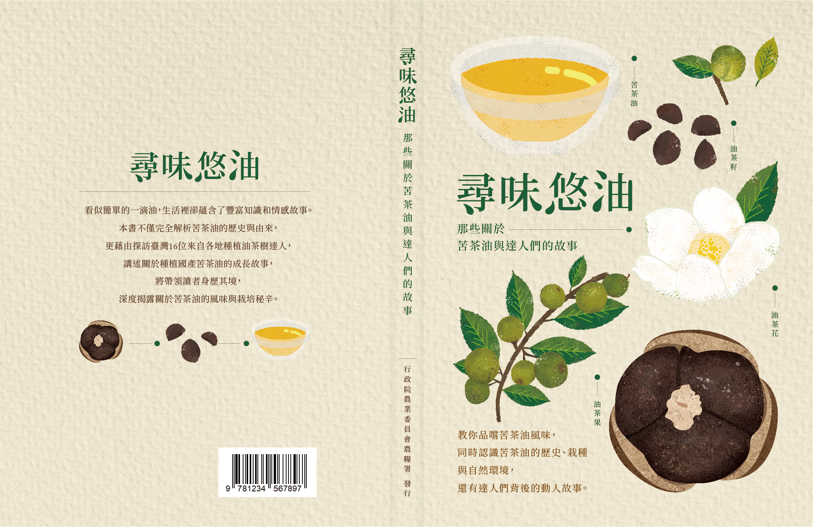
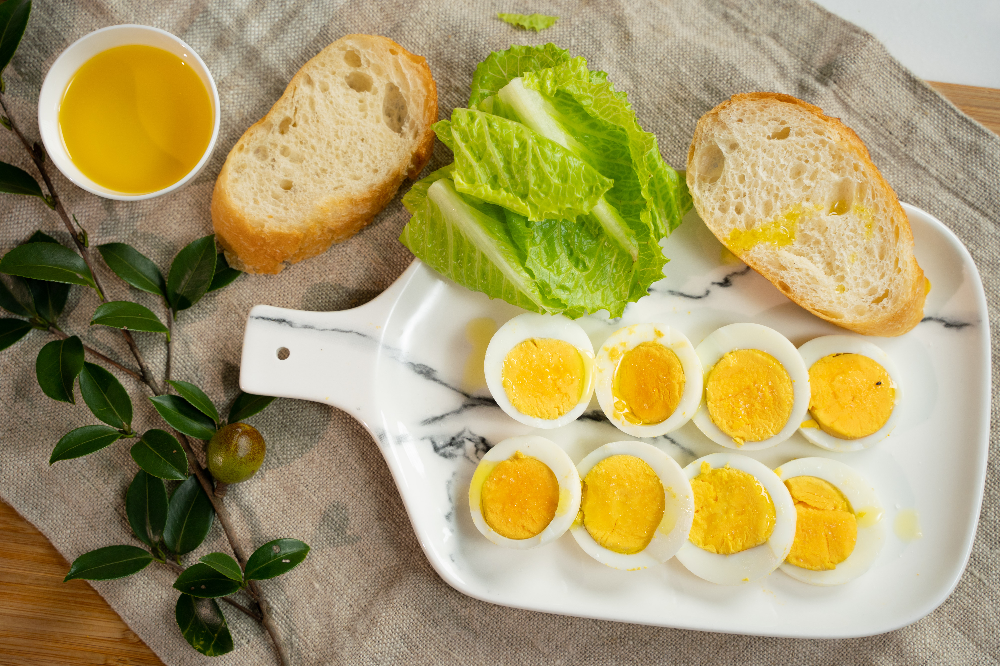
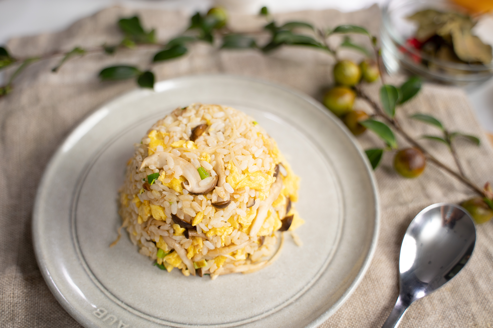
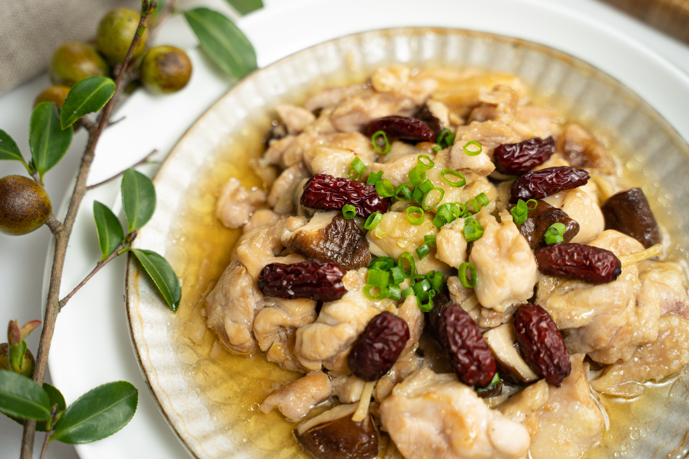

整理近年由相關單位出版的手冊、教材，以及可線上隨選學習的數位課程， 適合在閱讀本站文章後想再深入學習的讀者。
職人故事與料理影像，是我們持續整理、希望未來能成書與專欄連載的內容。 目前先以延伸閱讀的方式，邀請你從一張餐桌、一段故事出發，繼續認識國產油茶。




由相關單位整理的油茶手冊，建議搭配本站文章一起閱讀。
共 12 堂油茶相關數位課程，由好思 Smart Thinking 平台提供。